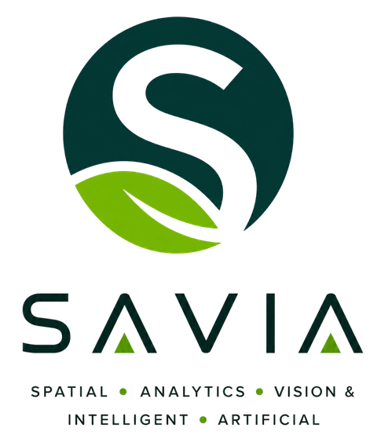
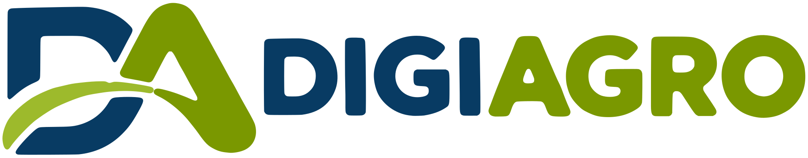

SAVIA
Plataforma de procesamiento y fusión de datos multisensoriales que convierte cada vuelo en el inventario por individuo, el vigor, la erosión y el balance de carbono de la finca.
Entrar en SAVIA
Convertimos el dato de campo en decisiones rentables y sostenibles
Convertimos datos multisensoriales en decisiones para un olivar más sostenible, eficiente y resiliente
Somos la unidad de innovación digital del Instituto Universitario de Investigación en Olivar y Aceites de Oliva (INUO) de la Universidad de Jaén. Unimos ingeniería, agronomía e inteligencia artificial para llevar al olivar la tecnología más avanzada: drones con sensores multiespectrales, térmicos y LiDAR que miden cada olivo, gemelos digitales de cada finca y modelos predictivos que anticipan su evolución. Llevamos ese conocimiento de cada parcela a todo el territorio.
Principales áreas de conocimiento
Profesor Titular de la Universidad de Jaén. Coordinador del Living Lab Andaluz (LivingSoiLL) y del Espacio de Datos de Suelos (SOIL DATA SPACE). Vicepresidente de Eurographics en España.

Plataforma de procesamiento y fusión de datos multisensoriales que convierte cada vuelo en el inventario por individuo, el vigor, la erosión y el balance de carbono de la finca.
Entrar en SAVIANuestro laboratorio de teledetección. Reúne la flota de drones, los sensores multiespectrales, térmicos, hiperespectrales y LiDAR, y la galería de vuelos.
Ver todo el equipamientoLa agricultura inteligente es clave para un modelo más sostenible, eficiente y resiliente
Investigamos sobre el terreno, en las fincas del olivar andaluz
Hablemos de tu finca, tu cooperativa o tu próximo proyecto de investigación.
Escríbenos